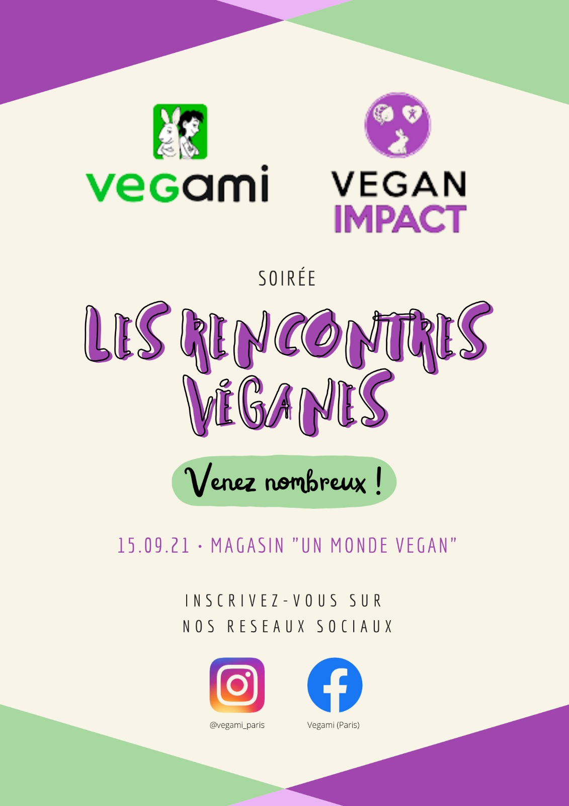

Campagne Engagement Durable RSE — Euroapi
Acculturer les équipes aux enjeux industriels de durabilité et de sécurité.
Environnement & Sobriété : Pilotage de la communication sur les enjeux Eau/Énergie/Déchets. Valorisation de projets techniques majeurs (système de thermopompe, nouvelle plateforme déchets) auprès des collaborateurs et des autorités locales. Création de parcours pédagogiques et campagnes d'écogestes.
- KPI : 100% conformité environnementale valorisée | env. 10 visites institutionnelles organisées.
{kind=link}

Culture Sécurité & Social : Déploiement de la Semaine du Développement Durable et lancement du "Bilan Carbone Collaborateur". Collaboration étroite avec le pôle HSSE pour transformer les indicateurs techniques (TF/TG) en supports visuels et infographies pédagogiques impactants.
- KPI : Participation quadruplée aux ateliers | env. 450 salariés sensibilisés au bilan carbone.
{kind=link}
Gouvernance & Transparence : Création d'une identité visuelle ESG dédiée pour structurer la démarche. Mise en place d'un reporting mensuel de performance (Eau, Énergie, Sécurité) intégré à la newsletter hebdomadaire pour ancrer la culture du résultat sur le site.
- KPI : Reporting RSE mensuel instauré | +15% de taux de lecture sur les sujets stratégiques.
{kind=link}